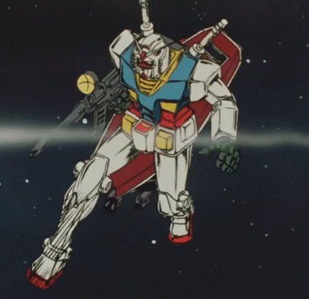

🤖 Gundam 2 🤖
กำเนิดของ Gundam
Gundam เป็นแฟรนไชส์หุ่นยนต์ขนาดยักษ์ที่มีชื่อเสียงระดับโลก ก่อตั้งขึ้นโดย Sunrise บริษัทผลิตอนิเมะญี่ปุ่น โดยซีรีส์แรก "Mobile Suit Gundam" ได้ออกอากาศครั้งแรกในปี 1979 ภายใต้การกำกับของ โยชิยูกิ โทมิโนะ (Yoshiyuki Tomino) ซึ่งได้รับความร่วมมือจากทีมงานที่มีความสามารถอย่างมาก การพัฒนาและแรงบันดาลใจ โยชิยูกิ โทมิโนะ มีความตั้งใจที่จะสร้างอนิเมะที่แตกต่างจากหุ่นยนต์ยักษ์ที่มีอยู่ในขณะนั้น แทนที่จะเน้นไปที่หุ่นยนต์ที่มีพลังพิเศษและไม่สามารถถูกทำลายได้ เขาได้เลือกที่จะนำเสนอหุ่นยนต์ที่มีการออกแบบและการทำงานที่สมจริงมากขึ้น โดยได้รับแรงบันดาลใจจากวิทยาศาสตร์และเทคโนโลยีในโลกจริง โทมิโนะได้ร่วมงานกับนักออกแบบหุ่นยนต์ คุนิโอะ โอคาวาระ (Kunio Okawara) ซึ่งเป็นผู้ออกแบบหุ่นยนต์ Gundam RX-78-2 ที่กลายเป็นสัญลักษณ์ของซีรีส์ Gundam การออกแบบของโอคาวาระเน้นไปที่ความเป็นจริงและความสามารถทางวิศวกรรม ทำให้หุ่นยนต์ใน Gundam ดูเหมือนเป็นเครื่องจักรที่สามารถสร้างขึ้นและใช้งานได้จริง 